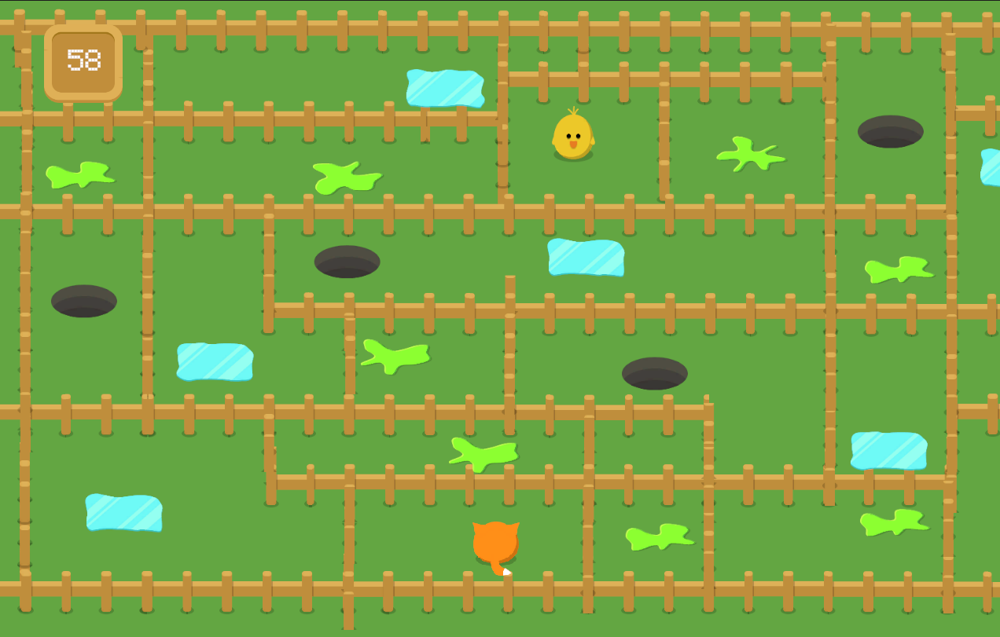
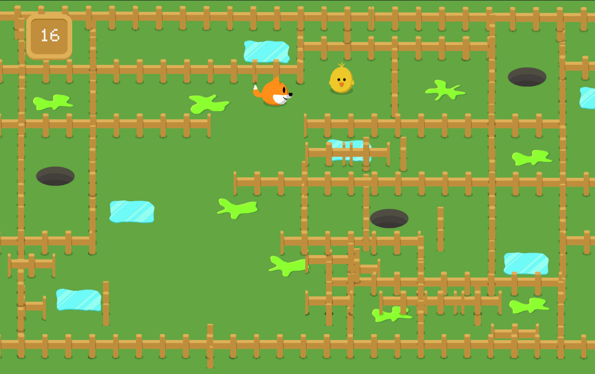

Fenced Fox
Puzzle Game
Genre: 2D Puzzle
Engine: Unity
Timeframe: 1 Week
Overview
Fenced Fox is a puzzle game where players rearrange fences by clicking and dragging them, opening new paths to navigate maze-like levels full of obstacles while also paying attention to the amount of time they have left.
Design Process
Fenced Fox came from my Rapid Game Development class, where we had to make a weekly video game. My initial goal was to make a puzzle game, something with a timer but that also gave off a cutesy feeling. Additionally, I’d recently rewatched Fantastic Mr.Fox, so when I saw some free assets on Itch.io that featured a fox and other characters, like mice, I knew I could shape a game around them.

My main goal was to create a puzzle game. But with a fox at the center of the game, I needed to brainstorm what this fox's goal was. I ended up coming up with fences as a movement constraint and giving the player the ability to move both the fox and most of the fences. I also decided to use Unity for the project, given that I had a short amount of time and that I feel comfortable working both with Unity and C#. Picking up and moving the fences needed to feel not just natural but also satisfying, so I made sure to tint sprites a yellow color when they were selected and, most importantly, added audio that was a popping sound to let the player know that the fence had been selected.

Originally, I had made the colliders behave in a way that even when selected they couldn’t overlap, but that made it feel clunky and unnatural when I would go back and play it, so it seemed like a better decision to let them be able to be stacked on top of one another so that the game didn't become frustrating. But as I had laid out in my rough sketch during the brainstorm phase, I also wanted there to be some sort of obstacles besides fences that would stand in the foxes' way as they went to get their prey. At first, it had just been things like holes in the ground, maybe made by rabbits or prairie dogs, that the fox could fall into, but only holes seemed a bit dull, so I added additional obstacles like acid spills and ice patches.
Originally, I had made the colliders behave in a way that even when selected they couldn’t overlap, but that made it feel clunky and unnatural when I would go back and play it, so it seemed like a better decision to let them be able to be stacked on top of one another so that the game didn't become frustrating. But as I had laid out in my rough sketch during the brainstorm phase, I also wanted there to be some sort of obstacles besides fences that would stand in the foxes' way as they went to get their prey. At first, it had just been things like holes in the ground, maybe made by rabbits or prairie dogs, that the fox could fall into, but only holes seemed a bit dull, so I added additional obstacles like acid spills and ice patches.
My professor and classmates responded positively to this game, noting that they liked having to move the fences to move the fox and the time constraint.
Challenges
Time Constraints: One major challenge that I faced during this particular project was being short on time, I was juggling not only rapid game development but four other classes and a job, so time was coming up a bit short. Ultimately, I decided to block off large chunks of time to just this project so that I could sit down and only focus on one thing, which helped with both motivation and development.
Selecting Fences: The selection of fences was a bit funky at first, and I needed to make sure that players could grab fences in a way that felt natural and wouldn’t be clicking the fence multiple times before picking it up, which was originally how it was. But after a bit of playtesting and seeing where someone would be directing their mouse to pick up the fence, I was able to adjust the areas of the box colliders on the fences to detect the player's mouse.
Obstacles: When I began placing obstacles, it was clear that they were really what was going to dictate what direction the player chose to go. So, I placed them strategically with level design in mind but also with the time constraint in mind. I had to know where I would be setting things up and get player paths, or else it seemed like I was making paths very direct to the goal, which isn’t much fun.